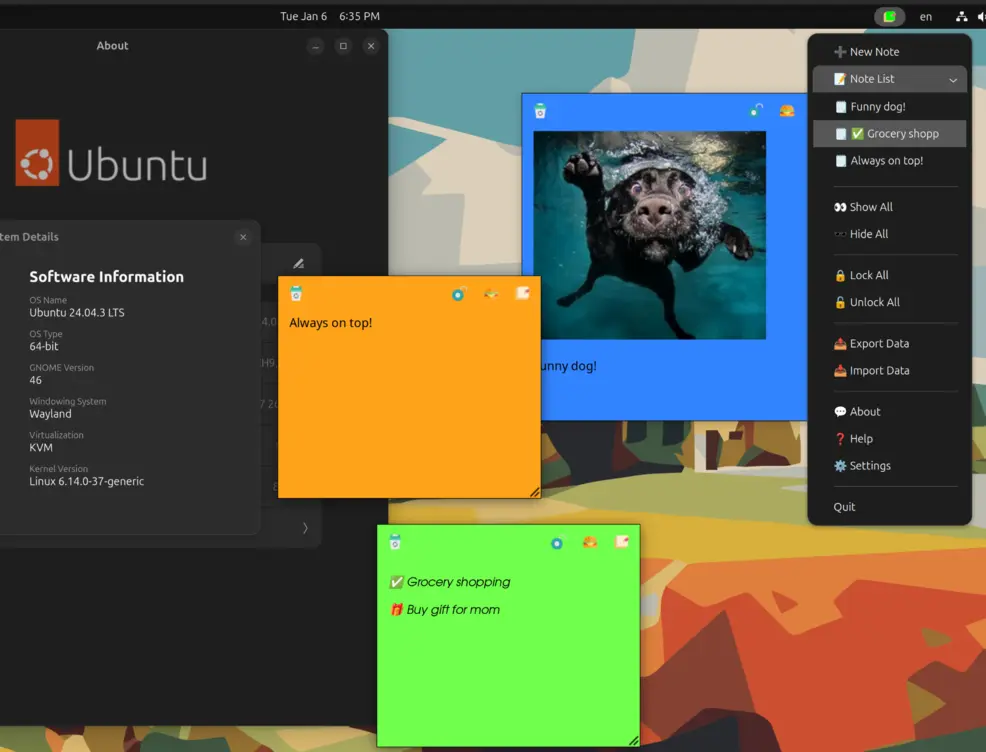
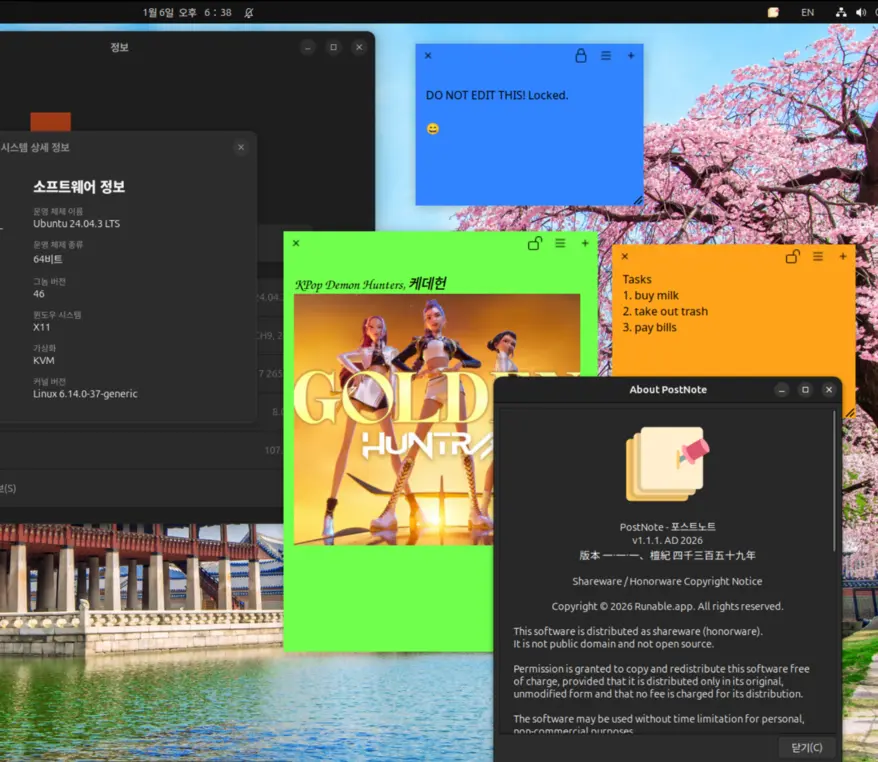

About
PostNote is a modern, high-performance note-taking application for Linux, written in Go with native Wayland support. Inspired by the work of Umang Varma (Indicator Stickynotes), PostNote offers convenient management of multiple notes through a system tray indicator.
Wayland

X11

Features
- System tray indicator for sticky notes
- Multiple notes with category support
- Customizable colors and fonts per category
- Lock/unlock notes to prevent accidental editing
- Export/import note data
- Keyboard shortcuts (Ctrl+W: Delete, Ctrl+L: Lock, Ctrl+N: New)
- Note button designs can be changed to suit your preference
- Allow one small image to be pasted into the note (one image per note)
- Wayland support for position saving and restoration with GNOME extension
- Wayland support for "Always on top" feature, Hide/Show notes
- All resources are embedded in the binary for portability
Wayland Support
PostNote supports saving and restoring window positions on Wayland when using the window-calls GNOME extension.
With the extension installed:
- Window positions are automatically tracked and saved
- Notes restore to their previous positions on restart
- Position updates happen in real-time as windows are moved
Without the extension (or on X11):
- On X11: Window positions work normally using GTK methods
- On Wayland without extension: Window positions cannot be saved (Wayland security limitation)
Requirements
GNOME Extension (for Wayland)
Required for Wayland users: Install the window-calls GNOME extension to enable window position saving and restoration on Wayland.
APT Packages (Ubuntu/Debian)
Required packages for running the application (usually pre-installed):
Limitations
- Wayland window positioning: Requires the
window-callsGNOME extension. Without it, window positions cannot be saved on Wayland (this is a Wayland security limitation, not a bug). - System dependencies: It uses system GTK libraries (not bundled), so GTK3 and Ayatana AppIndicator must be installed on the target system.
- Desktop environment: Currently optimized for GNOME desktop environment with AppIndicator support.
Technology
PostNote is written in Go using:
- GTK3 for the graphical user interface
- Ayatana AppIndicator for system tray integration
- CGO for C library bindings
- Go's embed package for bundling resources